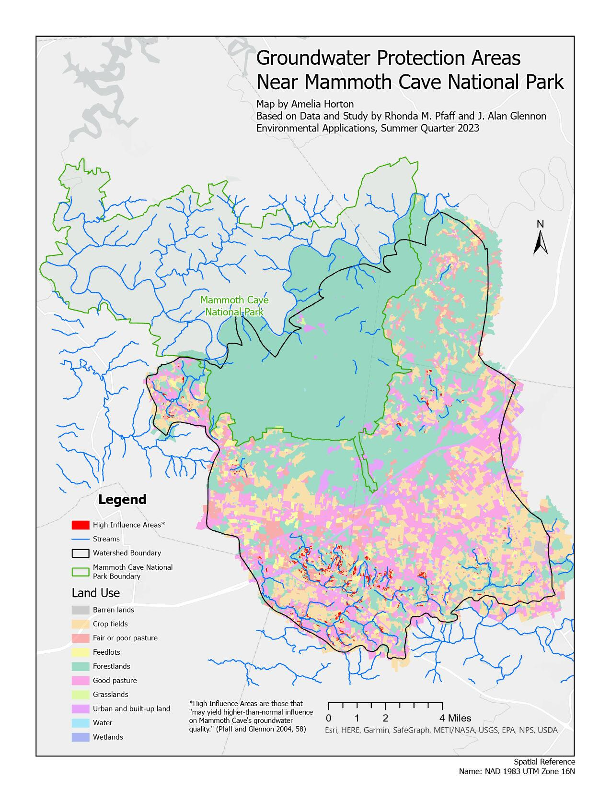

All maps on this page were created in fulfillment of course requirements for the graduate certificate in GIS at the University of Denver.
This series of maps displays trends in demographic makeup and home ownership in Denver, Colorado.
Data Source: 2010 US Census
This map shows areas identified to be the most influential of overall groundwater quality at Mammoth Cave National Park in Kentucky.
Data Source: ArcGIS OnlineThis map shows predictions for coastal flooding in Manhattan, NYC for the year 2100. Two scenarios for sea level rise flooding are shown (Best-Case and Worst-Case), as well as the potential effects of a 17.33ft storm surge, which occurred during hurricane Sandy in 2012.
Data Source: USGS